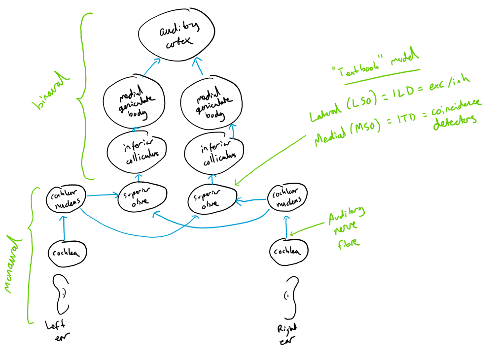

Background
Contents
Background¶
This is a VERY brief intro to the auditory system and sound localisation.
Depending on the direction that a sound arrives from, the signals at the left/right ears are different, and we can use this to infer the direction the sound is arriving from.
ITD. There’s an arrival time difference because depending on the direction the sound is coming from it has further to travel to one ear than the other, in a way that depends on head size. This interaural time difference (ITD) is frequency-dependent (larger ITDs at lower frequencies). These time differences are on the order of up to around 700 microseconds for a typical human, although effective ITDs can be as large as 1ms at low frequencies.
For narrow-band signals like a tone, ITD is ambiguous because - for example - for a sine wave you could add a delay of 1/f and you would have the same signal. What is always unambiguous is the interaural phase difference (IPD). The duplex theory says that because of this we use ITD only at low frequencies where the IPDs and ITDs can be unambiguously translated. However, you can resolve this ambiguity by combining information across multiple frequencies, or by looking at ITDs in the envelope rather than the carrier of the signal. This is all still somewhat debated.
ILD. There’s a level difference due essentially to the sound having to pass through the head making it quieter at one ear than the other. I think off the top of my head these go to a maximum of around 10-20 dB. This is also level dependent, with larger ILDs at higher frequencies.
Monaural filtering. It’s actually possible - if you know the sound source - to localise the sound with just one ear because the shape of the pinna (the fleshy flappy bit we call our ears) filters the sound differently depending on the direction. You can learn these direction-dependent filters.
HRTF. We can summarise all these transformations with a linear filter, the head-related transfer function (HRTF). We can measure these in people and animals. The model in my 2010 paper (below) is basically that we can set up neural filters that can match the acoustic filters, and we can detect that they’re matching with coincidence detection. It would be fascinating to see if this emerges as a strategy with surrogate gradient descent!
Cochlear filtering. When the sound arrives at the ear it gets bandpass filtered into different frequency bands. The centre frequencies of these bands and bandwidths are roughly log scale, so that at higher frequencies there is a larger gap between the centre frequencies, but the bandwidths are larger, meaning the overlap stays around the same. In humans we have around 3000 filters per ear covering the 20 Hz - 20 kHz range (older adults will typically have lost some of their high frequencies). In my work, I often model these with a gammatone filter, which is a simple linear filter that matches the auditory system fairly well. It definitely misses a lot of interesting nonlinear stuff (cross-frequency effects, dynamic gain control, etc.), and whether or not that is relevant for this project is unclear.
Inner hair cells are connected to the cochlea and have a graded synapse to the auditory nerve fibres. They can be modelled simply as a ReLU followed by being raised to the power ⅓ (compression). The latter may not be relevant for this project.
Auditory nerve fibres are the first spiking neuron in the auditory system. A reasonable model is that they fire Poisson spikes with a time varying firing rate given by the output of the inner hair cell model. They are also adaptive, and you can have one, two or more vesicle pools to model this adaptation. Various models of different complexity can be used. Probably a single vesicle pool model is good enough for this project. Some simple models covered in this paper.

After the auditory nerve, signals go to the cochlear nucleus where there are various cell types and computations, some of which include onset sensitive cells and cells that sharpen spike timing. From there they travel to the superior olive where there are the first binaural neurons, including the lateral superior olive (LSO, believed to process ILDs, often modelled as excitation/inhibition) and the medial superior olive (MSO, believed to process ITDs, often modelled with coincidence detection). Finally they go through various further stages before getting to the auditory cortex. If you’re familiar with the visual system, there’s a lot more going on here before you get to cortex.
You can compute tuning curves for binaural cells, e.g. ITD tuning curves. You can form a distribution of the best delays (peak of the ITD tuning curve) and best frequencies (peak of the frequency tuning curve) and plot these (see the decoding paper below). You can ask what is the optimal way to decode sound localisation given the set of outputs of these. This is the subject of the decoding paper below. However, none of these questions are settled.
What are the key mechanisms underlying all of this? How do they depend on the acoustic environment? Etc. Many questions without fully satisfying answers.
Literature¶
This is a very limited sample, not a comprehensive review. I’d read these papers and follow some of their references as a starting point to get us all on the same page.
Modelling¶
Decoding neural responses to temporal cues for sound localisation (2013). My paper comparing the Jeffress labelled line decoder, David McAlpine’s hemispheric decoder, and our proposed pattern match / perceptron decoder. Non-spiking. This paper is a good starting point because it points to a lot of the relevant literature.
Spike-timing-based computation in sound localisation (2010) and Learning to localise sounds with spiking neural networks (2010). Two of my early papers using SNNs to model sound localisation based on coincidence detection. The first one is a hand-crafted network and the second one is a very simple-minded extension to show that this could be learned.
Deep neural network models of sound localization reveal how perception is adapted to real-world environments (2022) (and biorxiv link). Recent paper from Josh McDermott’s lab doing a non-spiking version of something like what I’m proposing here. The big missing thing that they don’t cover is trying to understand how the learned model works.
Neuromorphic/Hardware Implementations¶
Neuromorphic learning towards nano second precision Abstract: Temporal coding is one approach to representing information in spiking neural networks. An example of its application is the location of sounds by barn owls that requires especially precise temporal coding. Dependent upon the azimuthal angle, the arrival times of sound signals are shifted between both ears. In order to determine these interaural time differences, the phase difference of the signals is measured. We implemented this biologically inspired network on a neuromorphic hardware system and demonstrate spike-timing dependent plasticity on an analog, highly accelerated hardware substrate. Our neuromorphic implementation enables the resolution of time differences of less than 50 ns. On-chip Hebbian learning mechanisms select inputs from a pool of neurons which code for the same sound frequency. Hence, noise caused by different synaptic delays across these inputs is reduced. Furthermore, learning compensates for variations on neuronal and synaptic parameters caused by device mismatch intrinsic to the neuromorphic substrate.